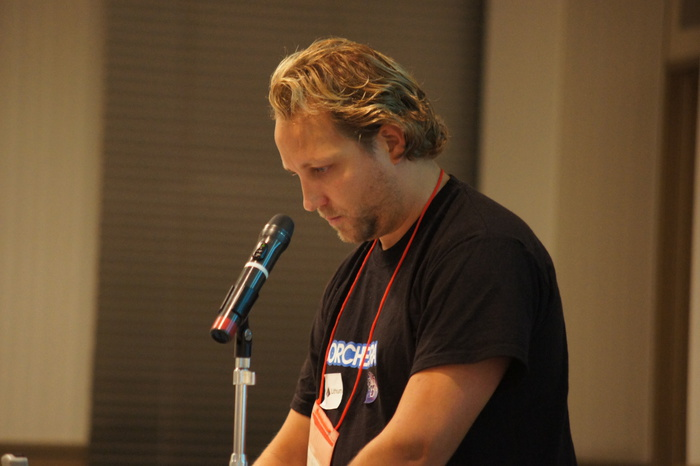
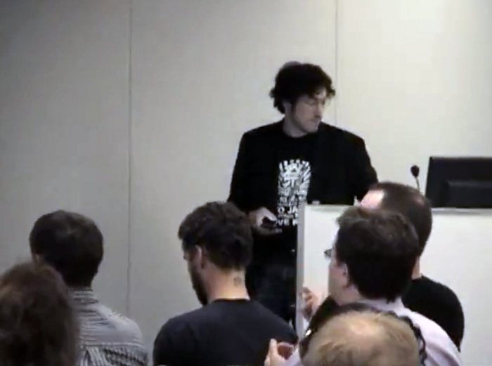
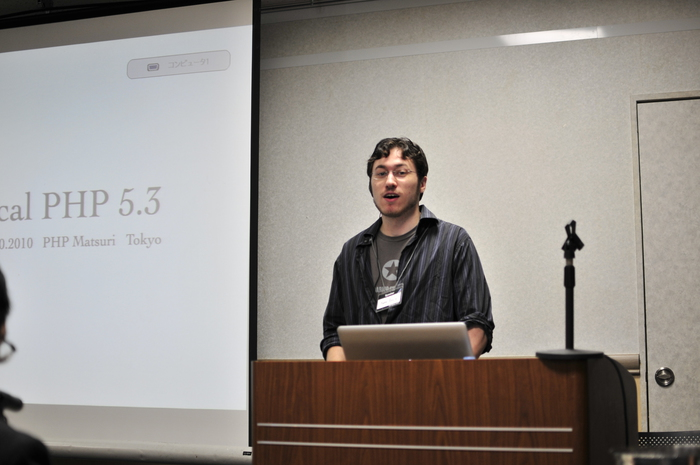
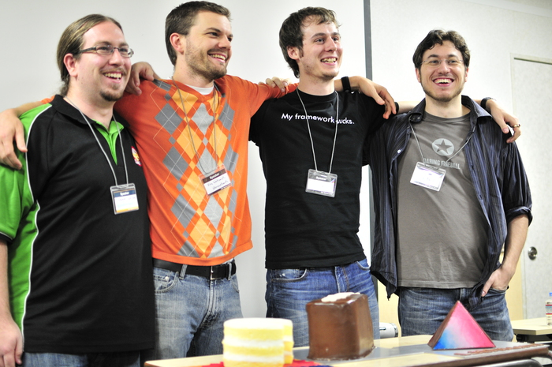
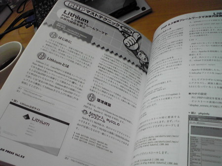

Presentations, Press, Audio and Video
Here you find all the presentations, press, audio and video materials related to the framework that we currently know of. If you want your presentation to get listed here, open an issue on the site's repository. This page also archives any old material in order to document the development the framework took over the years and how it spread around the globe. Its ultimate goal however is to provide you with informational (and sometimes humerous and entertaining) material that auguments the official documentation.
Presentations
Lithium: the framework with the best of both worlds by Richard McIntyre, PHPNW, 08/05/2012, slides, announcement
Frameworks tend to lean in either of 2 directions 1) Convention over configuration 2) Fully customizable but require large amount of architectural decisions After using a large amount of frameworks for both work and pleasure, finding Lithium which contains a healthy balance of default conventions but having true freedom to customize and configure your project both within the framework boundaries and by bending them makes this tool one of the most developer happy framework tools to use. [...]
Lithium - use \lithium\core\Object by John Anderson, UPHPU Meeting, 02/17/2012, slides
The State of Lithium by Nate Abele, Lithium NYC meetup, 02/07/2012, slides, video
An update on the state of the Lithium PHP framework, given at the inaugural Lithium NYC meetup, Feb. 7th, 2012.
The Lithium Way - An introduction to the most rad framework™ by James Fuller, South Florida PHP Users Group, 11/09/2011, slides
The Zen of Lithium by Nate Abele, BostonPHP, 06/08/2011, video, slides, announcement
Come learn about a new PHP Framework that some are touting as a potential game changer for PHP. If you are using any of the popular PHP frameworks like CakePHP, Symfony, Zend, or CodeIgniter - then you owe it to yourself to check out what Lithium has to offer... Lithium is a framework for PHP 5.3+ that is focused on quality, speed, and flexibility. It's a set of no-nonsense philosophies and tools that enable you to build better applications, in less time, without sacrificing quality or extensibility. Lithium understands distributed storage and caching, queuing systems, micro-dispatch frameworks, with integrated support for document oriented databases like CouchDB and MongoDB, alongside relational databases like MySQL and PostgreSQL. Lithium's architecture allows you to get your application up and running quickly, and still allows you to take control of the framework to support the requirements of your application. This presentation will be presented by Nate Abele who is the co-founder of Lithium framework. Prior to this, he was the lead developer of the very popular Cake PHP framework. Nate has been a member of Boston PHP for a long time, and we are really excited to have him come talk about Lithium. "The Zen of Lithium" provides an overview of some of the philosophies behind the Lithium framework.
Lithium - the most RAD framework for PHP 5.3+ by Yoan Blanc, slides
Less Time, Less Code, Less Headache by Nate Abele, 03/05/2011, slides
Learn how developing with the Lithium framework for PHP 5.3+ not only allows you to develop applications on tighter deadlines, but how Lithium's unique, superior architecture allows much-improved maintainability over the life of your apps.
Lithium: The Framework for People Who Hate Frameworks, Tokyo Edition by Nate Abele & Joël Perras, phpmatsuri Tokyo, 10/12/2010, slides
This is the updated version of Joël and my standard Lithium talk, with a few tweaks and updates since the last time we gave it.
Building Lithium Apps by Nate Abele, Pace University NYC, 19/10/2010 slides
Building Lithium Apps (Like a Boss) was a workshop presented on the structure and philosophy of the Lithium framework and its applications, and how best to take advantage of them.
PHP, Lithium and MongoDB by Mitch Pirtle, MongoBoston, 09/20/2010, slides
Mongodb and Totsy - E-commerce Case Study by Mitch Pirtle, MongoChicago, 08/21/2010, slides
Deck from MongoChicago, providing a case study on the implementation of the totsy.com website using MongoDB and the Lithium framework
New Features in PHP 5.3 and Lithium Framework by Garrett Woodworth, LAPHP, 03/31/2010
Lithium: The Framework for People Who Hate Frameworks by Nate Abele & Joël Perras, ConFoo, 03/11/2010, slides
This is the presentation was given at ConFoo on March 11th by Nate Abele and Joël Perras, and is an introduction to the architectural problems with other frameworks that Lithium was designed to address, and how it addresses them. It also introduces programming paradigms like functional and aspect-oriented programming which address issues that OOP doesn't account for.
Finally, the talk provides a quick overview of the innovative and unparalleled features that Lithium provides, including the data layer, which supports both relational and non-relational databases.
Lithium - Un framework que pega como piña by Mariano Iglesias, 03/08/2010, Grupo PHP Argentina, slides
PHP 5.3 and Lithium: the most rad php framework by Garret Woodworth, Orange County PHP meetup, 02/24/2010, slides, write-up
The presentation covers the new features in php 5.3 and goes on to show how they are used in Lithium, the most rad php framework.
Lithiumラボ #1 by Yusuke Ando, 01/30/2010, slides
The Origin of Lithium by Nate Abele, NYPHP, 01/26/2010, slides, video
This talk is an overview of the history of the PHP language and major framework projects that have emerged in the last 5 years. It examines what we've learned in the development of these frameworks, how that education has been brought to bear in Lithium.
Interviews
Future of PHP: Lithium - Part 2, Engine Yard Podcast hosted by Davey Shafik with Nate Abele, Garrett Woodworth, 03/30/2013, audio
Our own Davey Shafik interviews the core contributors and biggest fans of the Lithium framework. The panelists reflect on the direction of Lithium large milestones and a few things to come. Lithium is an awesome PHP project that aims to be the most RAD framework while providing tools to produce the highest quality code. Topics covered: *The current state of Lithium *Working with PHP 5.4 and 5.5 *Angular.js and Lithium *The PSRs that are being implemented
Lithium and Boating, Engine Yard Podcast hosted by Elizabeth Naramore with Garrett Woodwort, 06/15/2012, audio
On the heels of our Lithium sponsorship announcement, Elizabeth Naramore interviews Garrett Woodworth (fondly known as Gwoo) about the roots of Lithium, where it's going, and how he develops it on a boat.
Future of PHP: Lithium, Engine Yard Podcast hosted by Elizabeth Naramore with Nate Abele, Garrett Woodworth, and John Anderson, 12/02/2011, audio
Lithium may seem like a relative newcomer to the PHP Framework landscape, but it has amassed a collection of die hard followers because of its simplicity, power, and extensibility. If you're one of the Lithium army, or if you just want to learn more about where it's going, check out this podcast discussion with Lithium core contributors Nate Abele, Garrett Woodworth, and John Anderson. Elizabeth Naramore moderates the discussion about what is on the horizon for Lithium, both short and long term.
Nerd Radio hosted by Garth Braithwaite and Leif Wells with, audio, 2011
Joined by Nate Abele and Garrett Woodworth (Gwoo) to discuss their latest project, Lithium, the most rad PHP framework. Then the episode nerds out until it fizzles and we turn the mics off.
WebDevRadio - Episode 76: Lithium Framework for PHP with Nate Abele and Garrett Woodworth, 04/30/2010, audio
php|architect podcast: oddWeek #003 hosted by Cal Evans, Keith Casey with Nate Abele, 02/19/2010, announcement
This week’s special guest is Nate Abele, founder of the new PHP framework Lithium.
php|architect Podcast: Bake'n'Shake hosted by Marco Tabini with Nate Abele, Keith Casey, Cal Evans, Davey Shafik, Beth Tucker Long, 07/2009, announcenment, audio
In this episode, which shall henceforth be referred to as the one where we finally tell Tweeps who think we’re boring how we really feel about them, our special guest is Nate Abele, original co-developer of the CakePHP framework.
Press
Das als Lithium gestartete PHP-Framework li3 erreicht Version 1.0, heise Developer, 06/02/2016, article
Die Macher des Frameworks wagen nach gute sechs Jahren Entwicklung den Schritt zu 1.0 und versprechen künftig feste Releasezyklen. [...]
Engine Yard Sponsors the Lithium Framework by Elizabeth Naramore, 06/13/2012, post
We are proud to announce that Engine Yard is now the first official sponsor of the open source project, the Lithium PHP framework. We believe that Lithium holds a great deal of promise and we want to help it reach its full potential. [...]
PHP-Framework Lithium im Aufwind, heise Developer, 06/14/2012, article
Das PHP-Framework Lithium befindet sich im Aufwind – mit Engine Yard hat sich jetzt ein erster kommerzieller Sponsor für das Projekt gefunden. Neben rein finanzieller Unterstützung will der PaaS-Anbieter Lithium auch ideell vorantreiben [...]
Engine Yard Sponsors the Lithium Framework, phpdeveloper.com, post
A Japanese PHP Magazine, 2010
